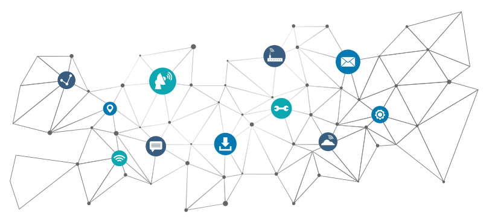
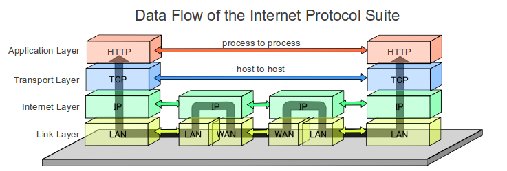
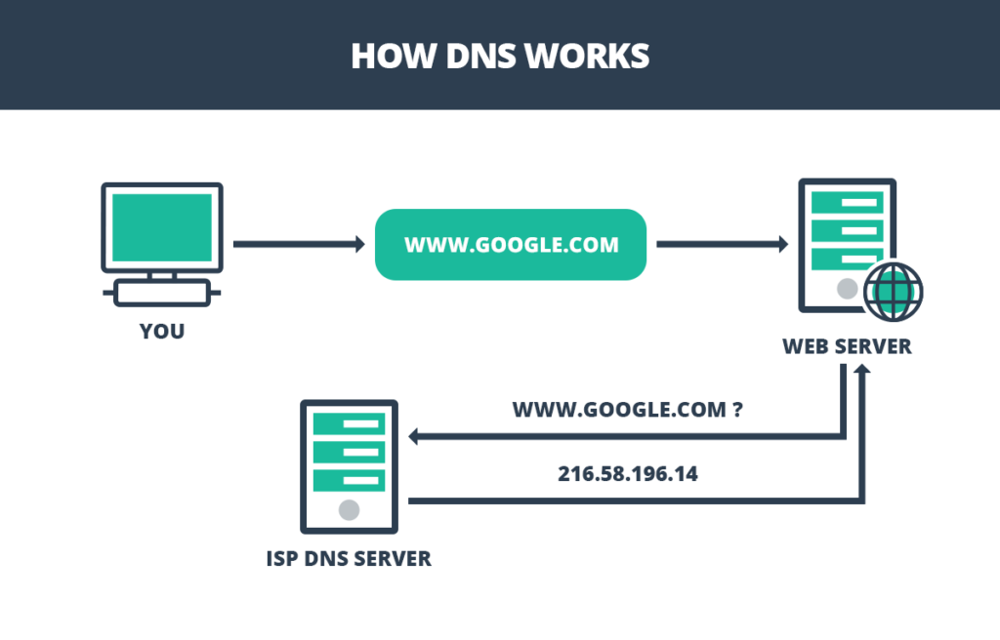
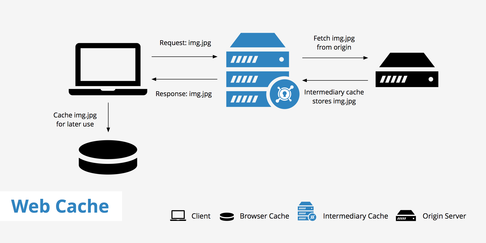
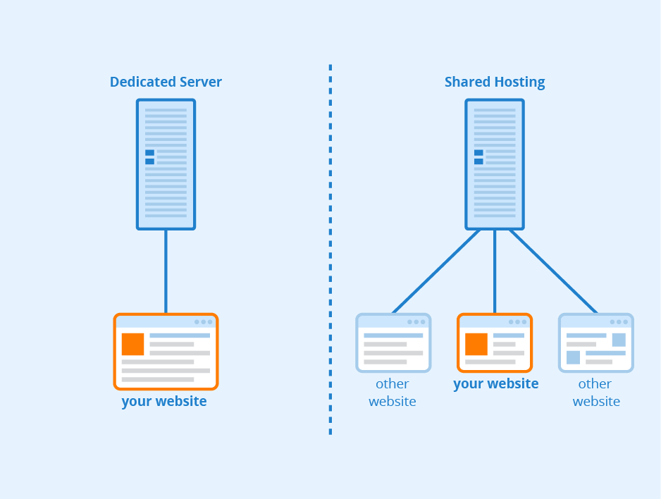
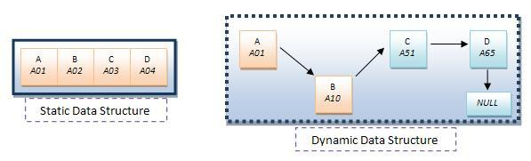

Networking and Internet basics
The Internet
The Internet is a technical infrastructure that allows billions of computers to be connected all together. Through simple networks or networks of networks. To connect to another computer you need to be able find it. Any computer linked to a network has a unique address that identifies it, called an "IP address".

Internet architecture
Your internet connection - Allows you to send and receive data on the web.
TCP/IP - Transmission Control Protocol and Internet Protocol are communication
protocols that define how data should travel across the internet.
Communication - Syntax: data format and coding, Semantics: control
information and error handling, Timing: speed matching and sequencing.
DNS - Domain Name Servers are like an address book for websites. When you type
a web address in your browser, the browser looks at the DNS to find the website's real address
before it can retrieve the website.
HTTP - Hypertext Transfer Protocol is an application protocol that defines a
language for clients and servers to speak to each other. HTTP itself runs on top of other protocols.
Component files - A website is made up of many different files.
Code files - Websites are built primarily from HTML, CSS, and JavaScript.
Assets - This is a collective name for all the other stuff that makes up a
website, such as images, music, video, Word documents, and PDFs.

The Web
The Web is a service built on top of the infrastructure. Computers connected to the web are called clients and servers. The client sends requests and the server responses. Clients are internet-connected devices like your computer or your phone. Servers are computers that store webpages, sites, or apps. A copy of the webpage is downloaded from the server onto the client machine to be displayed in the web browser.

Web servers
A web server is server software or hardware dedicated to running this software, that can satisfy client requests on the World Wide Web. A web server can, in general, contain one or more websites. A web server processes incoming network requests over HTTP and several other related protocols. The primary function of a web server is to store, process and deliver web pages to clients. The communication between client and server takes place using the Hypertext Transfer Protocol (HTTP).

Caching
Caching is the process of storing data in a cache. A cache is a temporary storage area. When you return to a page you've recently looked at, the browser can get those files from the cache rather than the original server, saving you time and saving the network the burden of additional traffic.

Traditional Web Hosting vs. Cloud Computing
To have a well functioning and efficient website, you need to use a web hosting service. There are two ways you can choose from, traditional web hosting and cloud computing. Web hosting gives you a fixed server or a portion of a single server, where cloud computing gives you the benefit of many servers all working together as one. Your particular website or application may only need one small portion of a single server, so there's no need to get a dedicated server.

Static vs. Dynamic pages
A data structure is a collection of data items, is a way of storing and organizing data efficiently such that the required operations on them can be performed to be efficient concerning time as well as memory. There are two approaches to creating a data structure; static data structure and dynamic data structure. In static web pages, pages will remain the same until someone changes it manually. In dynamic web pages, the content of pages is different for different visitors.
